导读：本文用可视化的方式介绍了 NumPy 的功能和使用示例。

NumPy 软件包是 Python 生态系统中数据分析、机器学习和科学计算的主力军。它极大地简化了向量和矩阵的操作处理。
Python 的一些主要软件包（如 scikit-learn、SciPy、pandas 和 tensorflow）都以 NumPy 作为其架构的基础部分。除了能对数值数据进行切片（slice）和切块（dice）之外，使用 NumPy 还能为处理和调试上述库中的高级实例带来极大便利。
本文将介绍使用 NumPy 的一些主要方法，以及在将数据送入机器学习模型之前，它如何表示不同类型的数据（表格、图像、文本等）。
import numpy as np
01 创建数组¶
我们可以通过传递一个 python 列表并使用 np.array() 来创建 NumPy 数组（极大可能是多维数组）。在本例中，python 创建的数组如下图右所示： 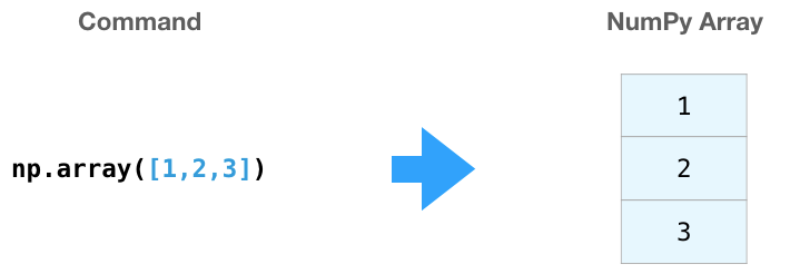 通常我们希望 NumPy 能初始化数组的值，为此 NumPy 提供了 ones()、zeros() 和 random.random() 等方法。我们只需传递希望 NumPy 生成的元素数量即可： 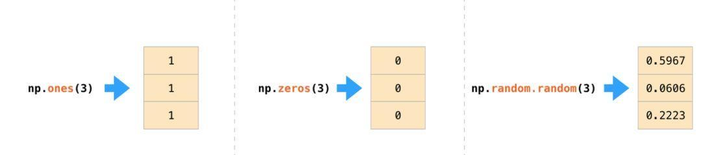 一旦创建了数组，我们就可以尽情对它们进行操作。
02 数组运算¶
让我们创建两个 NumPy 数组来展示数组运算功能。我们将下图两个数组称为 data 和 ones： 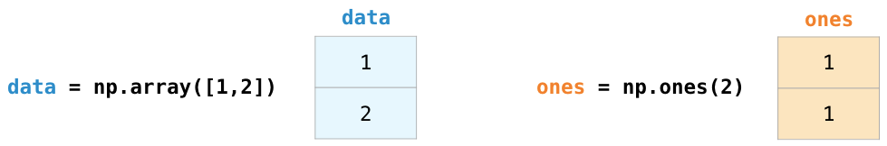
将它们按位置相加（即每行对应相加），直接输入 data + ones 即可： 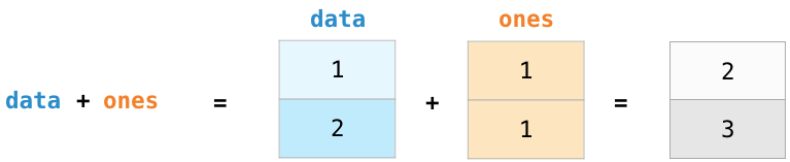
当我开始学习这些工具时，我发现这样的抽象让我不必在循环中编写类似计算。此类抽象可以使我在更高层面上思考问题。
除了「加」，我们还可以进行如下操作：
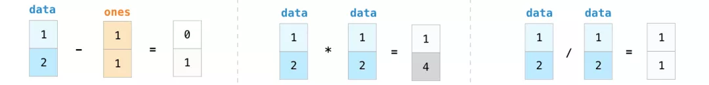
通常情况下，我们希望数组和单个数字之间也可以进行运算操作（即向量和标量之间的运算）。比如说，我们的数组表示以英里为单位的距离，我们希望将其单位转换为千米。只需输入data * 1.6即可：
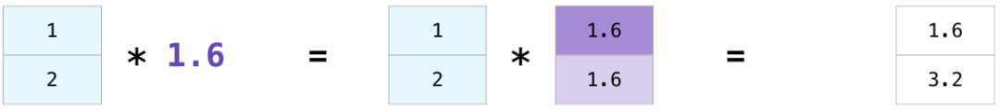
看到 NumPy 是如何理解这个运算的了吗？这个概念叫做广播机制（broadcasting），它非常有用。
03 索引¶
我们可以我们像对 python 列表进行切片一样，对 NumPy 数组进行任意的索引和切片：
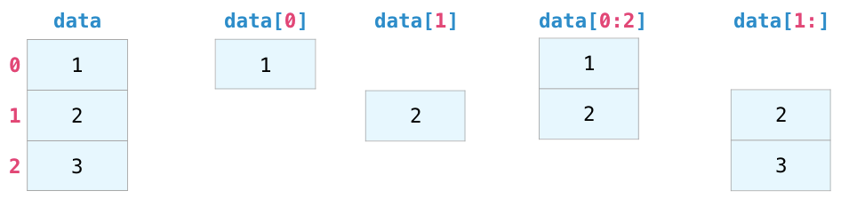
04 聚合¶
NumPy 还提供聚合功能： 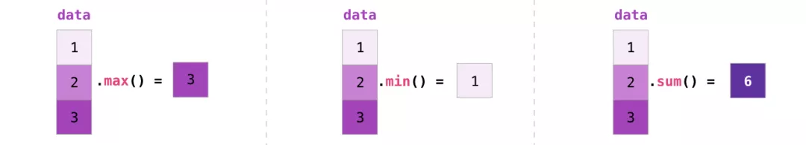 除了 min、max 和 sum 之外，你还可以使用 mean 得到平均值，使用 prod 得到所有元素的乘积，使用 std 得到标准差等等。
05 更多维度¶
上述的例子都在一个维度上处理向量。NumPy 之美的关键在于，它能够将上述所有方法应用到任意数量的维度。
1. 创建矩阵
我们可以传递下列形状的 python 列表，使 NumPy 创建一个矩阵来表示它：
np.array([[1,2],[3,4]])
我们也可以使用上面提到的方法（ones()、zeros() 和 random.random()），只要写入一个描述我们创建的矩阵维数的元组即可：
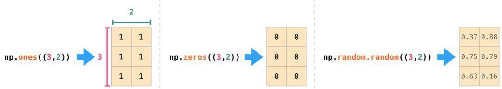
2. 矩阵运算
如果两个矩阵大小相同，我们可以使用算术运算符（+-*/）对矩阵进行加和乘。NumPy 将它们视为 position-wise 运算：矩阵乘法就是对应位置想乘除加减
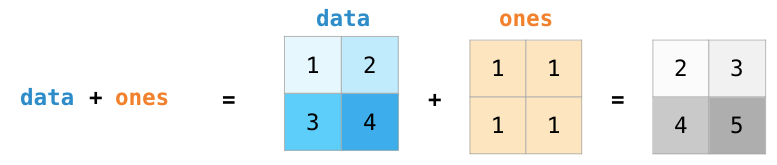
我们也可以对不同大小的两个矩阵执行此类算术运算，但前提是某一个维度为 1（如矩阵只有一列或一行），在这种情况下，NumPy 使用广播规则执行算术运算：
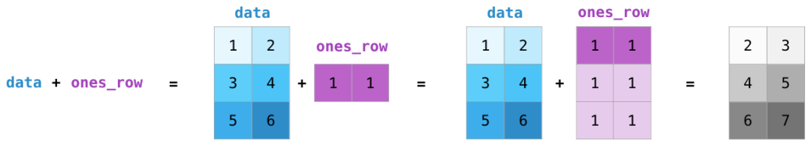
3. 点乘
算术运算和矩阵运算的一个关键区别是矩阵乘法使用点乘。NumPy 为每个矩阵赋予 dot() 方法，我们可以用它与其他矩阵执行点乘操作：
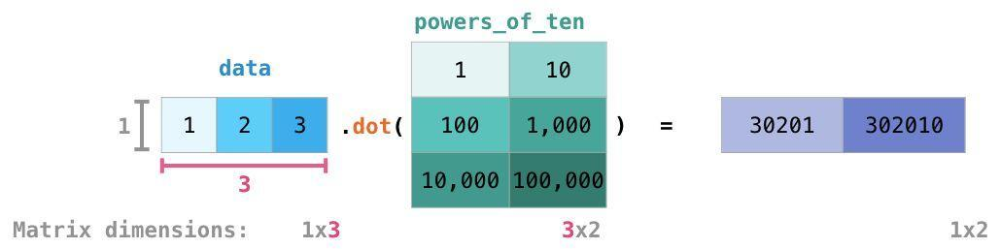
我在上图的右下角添加了矩阵维数，来强调这两个矩阵的临近边必须有相同的维数。你可以把上述运算视为：
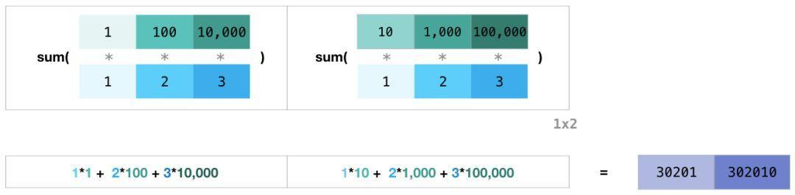
4. 矩阵索引
当我们处理矩阵时，索引和切片操作变得更加有用：

5. 矩阵聚合
我们可以像聚合向量一样聚合矩阵：

我们不仅可以聚合矩阵中的所有值，还可以使用 axis 参数执行跨行或跨列聚合：0是列1是行
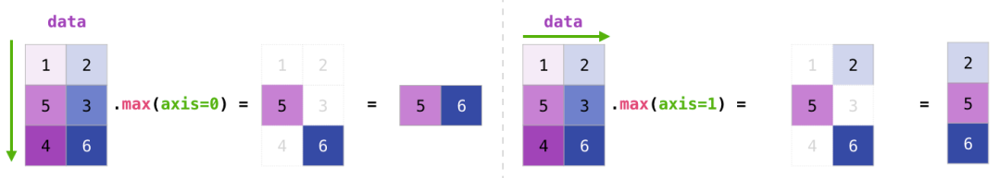
6. 转置和重塑
处理矩阵时的一个常见需求是旋转矩阵。当需要对两个矩阵执行点乘运算并对齐它们共享的维度时，通常需要进行转置。NumPy 数组有一个方便的方法 T 来求得矩阵转置：
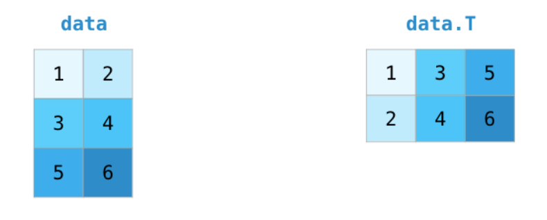
在更高级的实例中，你可能需要变换特定矩阵的维度。在机器学习应用中，经常会这样：某个模型对输入形状的要求与你的数据集不同。在这些情况下，NumPy 的 reshape() 方法就可以发挥作用了。只需将矩阵所需的新维度赋值给它即可。可以为维度赋值-1，NumPy 可以根据你的矩阵推断出正确的维度：
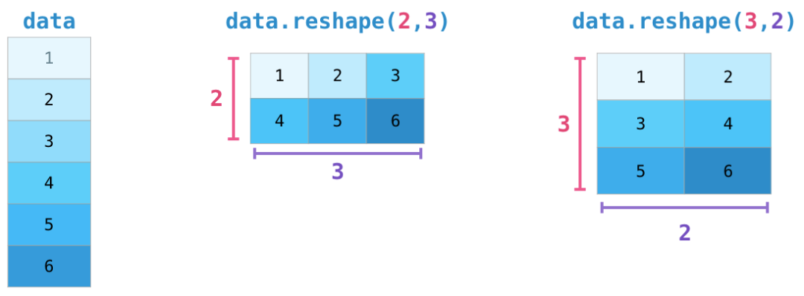
06 再多维度
NumPy 可以在任意维度实现上述提到的所有内容。其中心数据结构被叫作 ndarray（N 维数组）不是没道理的。
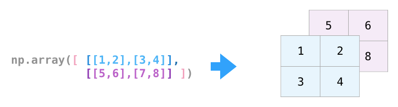
在很多情况下，处理一个新的维度只需在 NumPy 函数的参数中添加一个逗号：
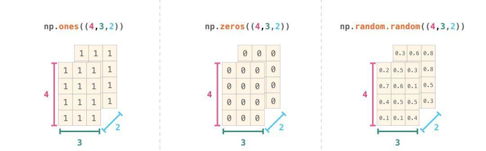
07 实际用法
以下是 NumPy 可实现的有用功能的实例演示。
1. 公式
实现可用于矩阵和向量的数学公式是 NumPy 的关键用例。这就是 NumPy 是 python 社区宠儿的原因。例如均方差公式，它是监督机器学习模型处理回归问题的核心：
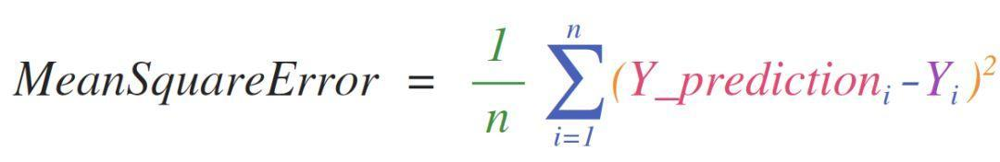
在 NumPy 中实现该公式很容易：
这样做的好处在于，NumPy 并不关心 predictions 和 labels 包含一个值还是一千个值（只要它们大小相同）。我们可以通过一个示例依次执行上面代码行中的四个操作：
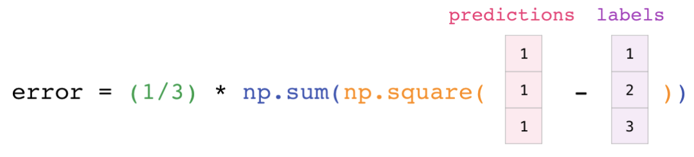
预测和标签向量都包含三个值，也就是说 n 的值为 3。减法后，得到的值如下：
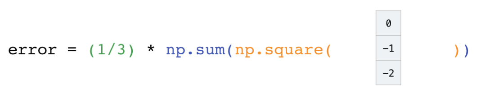
然后将向量平方得到：
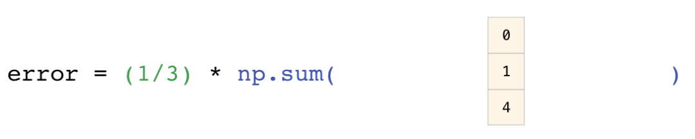
现在对这些值求和：
得到的结果即为该预测的误差值和模型质量评分。
2. 数据表示
考虑所有需要处理和构建模型所需的数据类型（电子表格、图像、音频等），其中很多都适合在 n 维数组中表示：
- 表格和电子表格
电子表格或值表是二维矩阵。电子表格中的每个工作表都可以是它自己的变量。python 中最流行的抽象是 pandas 数据帧，它实际上使用了 NumPy 并在其之上构建。

- 音频和时间序列
音频文件是样本的一维数组。每个样本都是一个数字，代表音频信号的一小部分。CD 质量的音频每秒包含 44,100 个样本，每个样本是-65535 到 65536 之间的整数。这意味着如果你有一个 10 秒的 CD 质量 WAVE 文件，你可以将它加载到长度为 10 * 44,100 = 441,000 的 NumPy 数组中。如果想要提取音频的第一秒，只需将文件加载到 audio 的 NumPy 数组中，然后获取 audio[:44100]。
以下是一段音频文件：
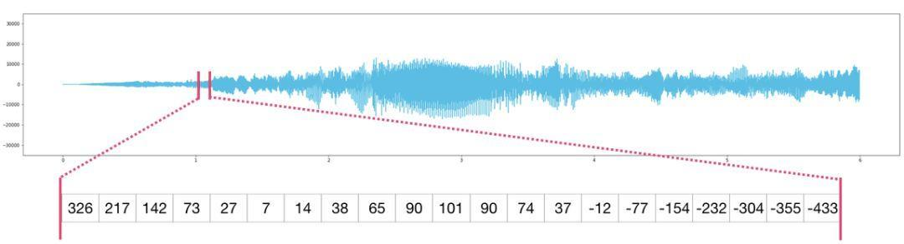
时间序列数据也是如此（如股票价格随时间变化）。
- 图像
图像是尺寸（高度 x 宽度）的像素矩阵。
如果图像是黑白（即灰度）的，则每个像素都可以用单个数字表示（通常在 0（黑色）和 255（白色）之间）。想要裁剪图像左上角 10 x 10 的像素吗？在 NumPy 写入 image[:10,:10] 即可。
下图是一个图像文件的片段：
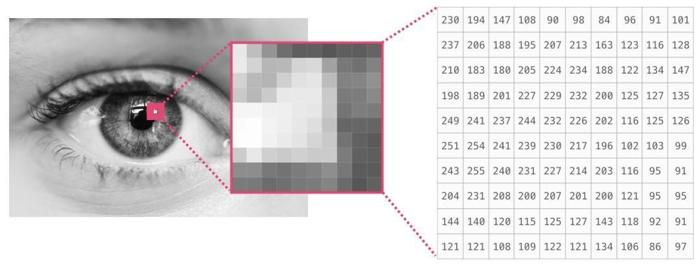
如果图像是彩色的，则每个像素由三个数字表示——红色、绿色和蓝色。在这种情况下，我们需要一个三维数组（因为每个单元格只能包含一个数字）。因此彩色图像由尺寸为（高 x 宽 x3）的 ndarray 表示：
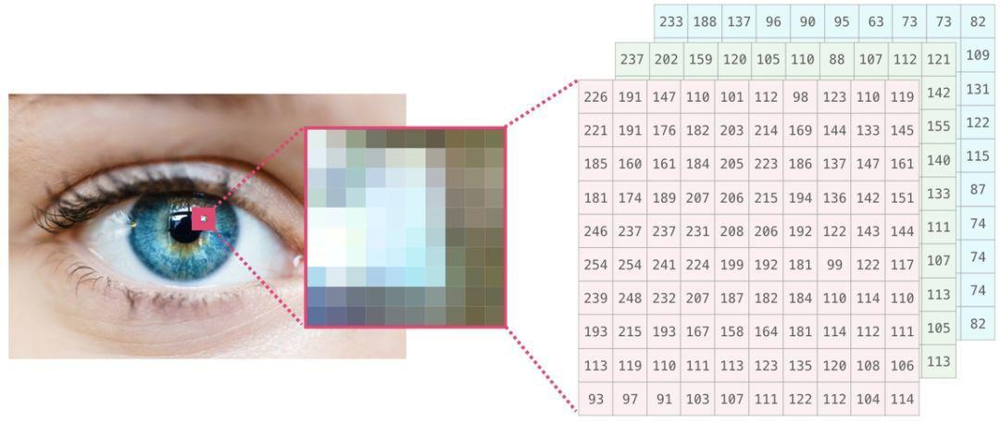
- 语言
如果我们处理文本，情况就不同了。文本的数字表示需要一个构建词汇表的步骤（模型知道的唯一字清单）和嵌入步骤。让我们看看用数字表示以下文字的步骤：
模型需要先查看大量文本，再用数字表示这位诗人的话语。我们可以让它处理一个小数据集，并用它来构建一个词汇表（71,290 个单词）：
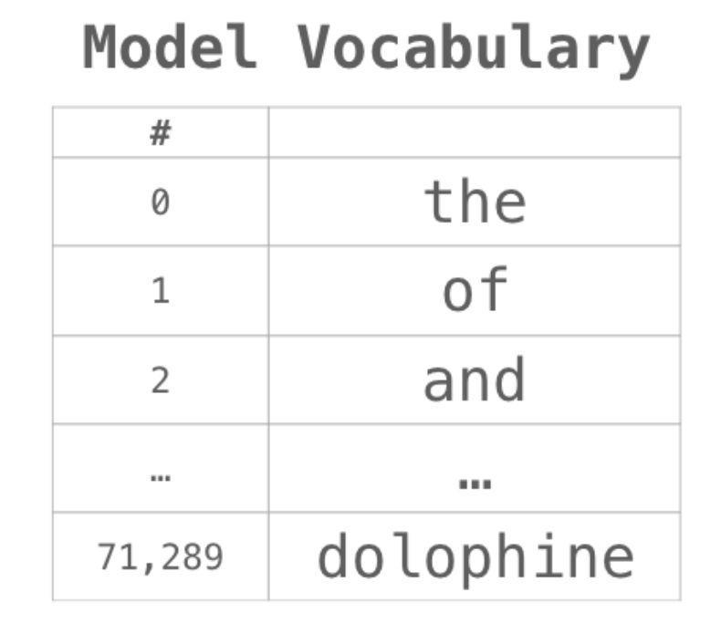
这个句子可以被分成一个 token 数组（基于通用规则的单词或单词的一部分）：
然后我们用词汇表中的 ID 替换每个单词：
这些 ID 仍然没有为模型提供太多信息价值。因此，在将这一组单词输入到模型之前，我们需要用嵌入替换 token/单词（在本例中为 50 维 word2vec 嵌入）：
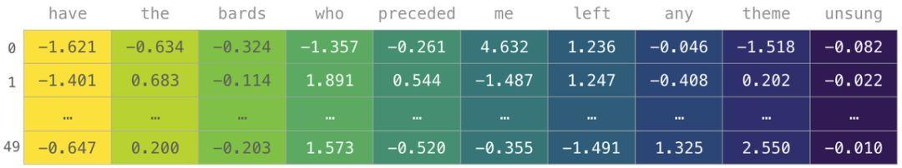
可以看到，该 NumPy 数组的维度为 [embedding_dimension x sequence_length]。出于性能原因，深度学习模型倾向于保留批大小的第一维（因为如果并行训练多个示例，模型训练速度会加快）。在这种情况下，reshape() 变得非常有用。如像 BERT 这样的模型期望的输入形式是：[batch_size，sequence_length，embedding_size]。
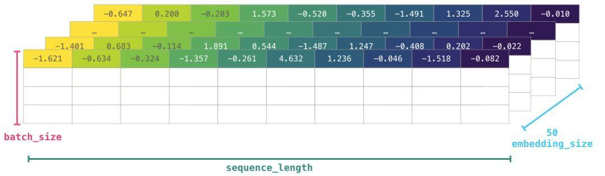
现在这是 numeric volume 形式，模型可以处理并执行相应操作。其他行虽然留空，但是它们会被填充其他示例以供模型训练（或预测）。